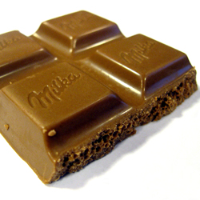
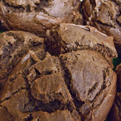
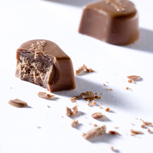

- 
- 
- 
NOM NOM NOM.
Leuke chocoladeweetjes
* ... er in vervlogen tijden tijdens de mis chocolade geserveerd werd aan de dames van adel?
* ... de kerk op een bepaalde moment de consumptie van chocolade verbood omdat het als afrodisiacum beschouwd werd?
* ... de Azteekse keizer Moctezuma tot 50 tassen gekruide cacao dronk per dag, én zeker alvorens hij zijn harem binnenstapte?
* ... Mevrouw Dy Barry chocoladedrank an haar minnaars schonk, opdat ze gelijke tred met hen kon houden?
* ... ook Casanova vaak een beroep deed op chocolade en champagne?
* ... chocolade in totaal meer dan 800 (!) bestanddelen bevat?
* ... chocolade het cholesterolgehalte niet verhoogt?Een derde van de vetten in cacaoboter bestaat uit oliezuur, een onverzadigd vetzuut dat algemeen bekend staat als een cholesterolverlager. Cacaoboter bevat ook verzadigde vetzuren, maar onderzoek heeft aangetoond dat zo'n40% ervan is samengesteld uit stearinezuur, wat een neutraal effect heeft op cholesterol.
* ... chocolade antioxidanten bevat (vb. polifenolen) die bijdragen tot de preventie van hartziekten en kanker?
* ... diabetici chocolade op het menu mogen zetten? Wel dient de inname van enkelvoudige suikers (zoals glucose, sacharose,...) beperkt te worden en gespreid over de dag om onverwachte verhogingen van de bloedsuikerspiegel te vermijden.
* ... chocolade geen levercrisissen veroorzaakt en chocolade van goede kwaliteit binne het halfuur verteerd is, als deze niet na een zware maaltijd wordt genuttigd?
* ... chocolade geen constipatie veroorzaakt?
Maar integendeel de samentrekkingscapaciteit van de spieren van de darmwand stimuleert en het voedseltransport bevordert.* ... chocolade niet verslavend werkt?
Onderzoek heeft aangetoond dat chocolade inderdaad stoffen bevat die verwant zijn aan stoffen aanwezig in cannabis, maar men zou 11 kilo chocolade per dag moeten eten om dezelfde uitwerking te hebben.* ... dat chocolade geen cariës veroorzaakt?
Chocolade kan wel, zoals vele andere voedingsmiddelen die suikers bevatten, de toename van bestaande cariës bevorderen als je geen goede mond- en tandhygiëne in acht nemen. Cacao bevat zelfs stoffen die tandbederf tegengaan, denken we maar aan looizuren die polhydroxyfenol bevatten, fosfaten en fluor.